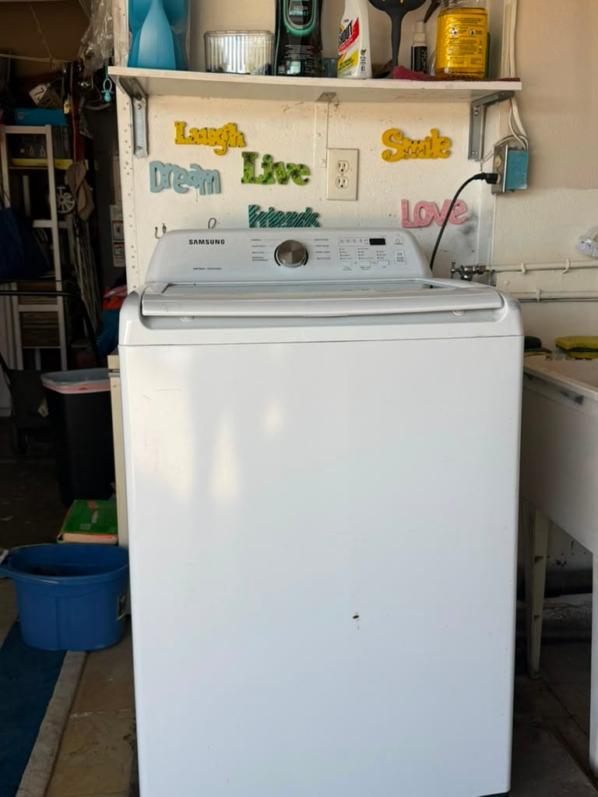
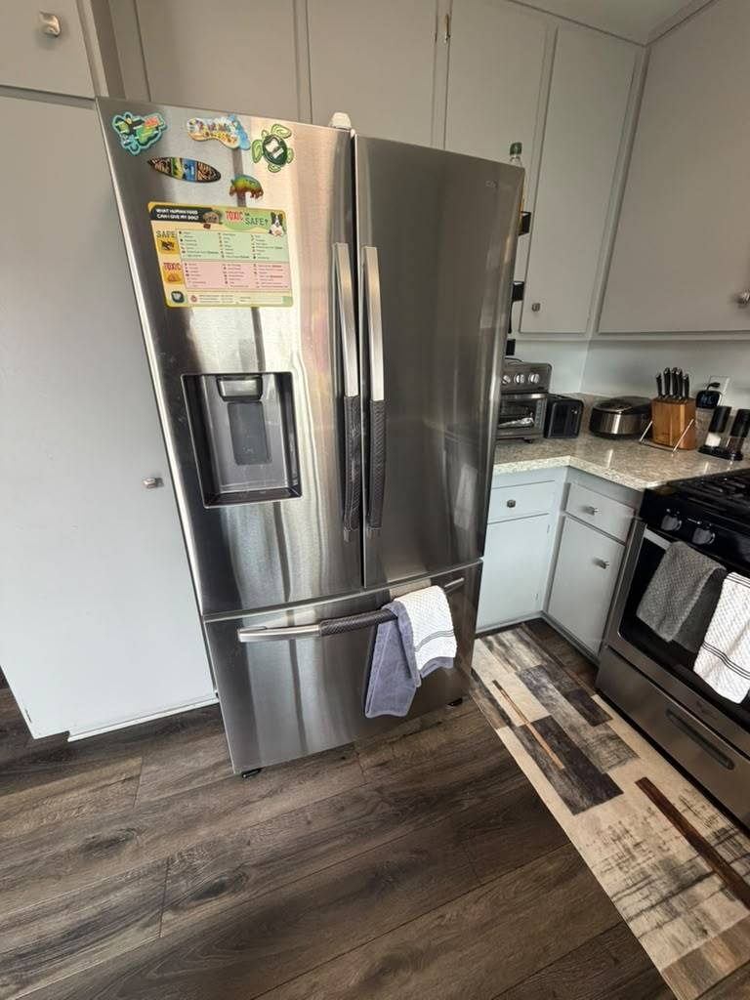
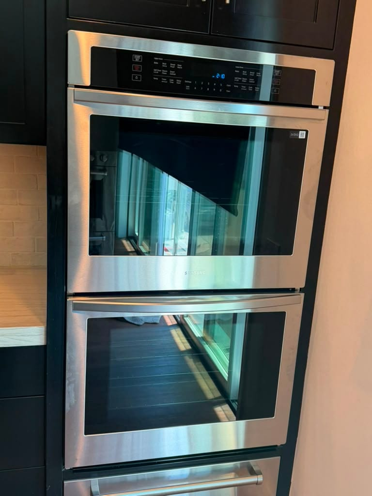
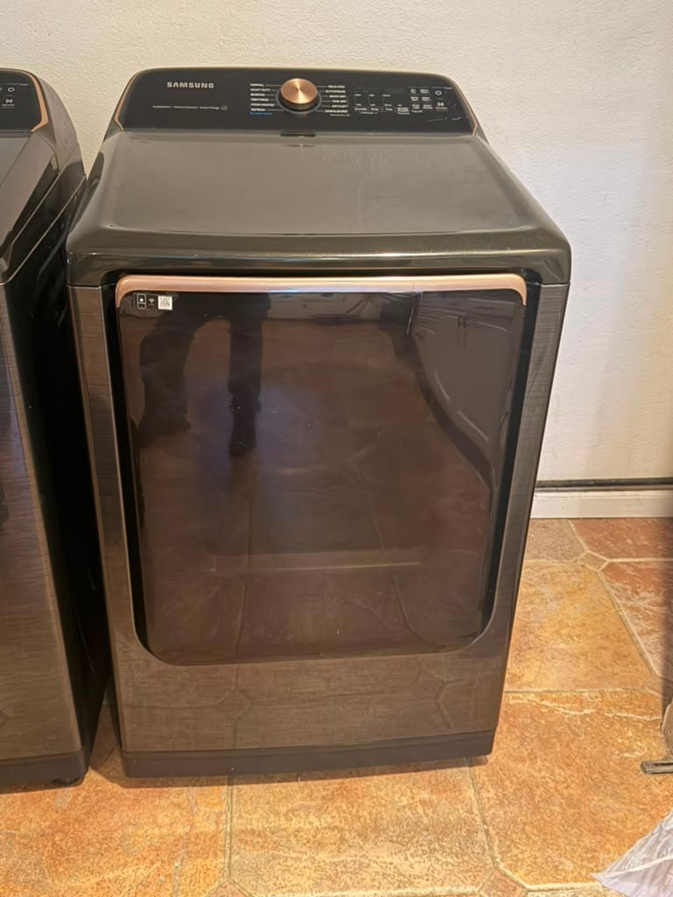
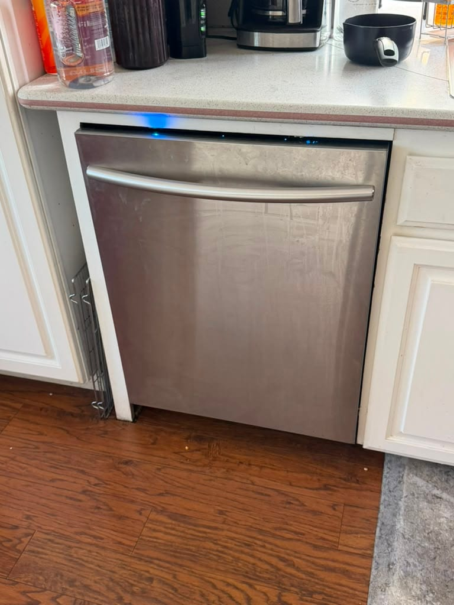
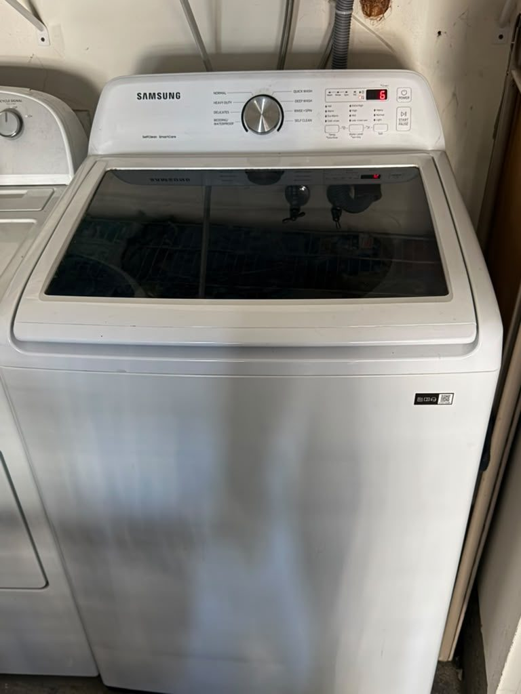
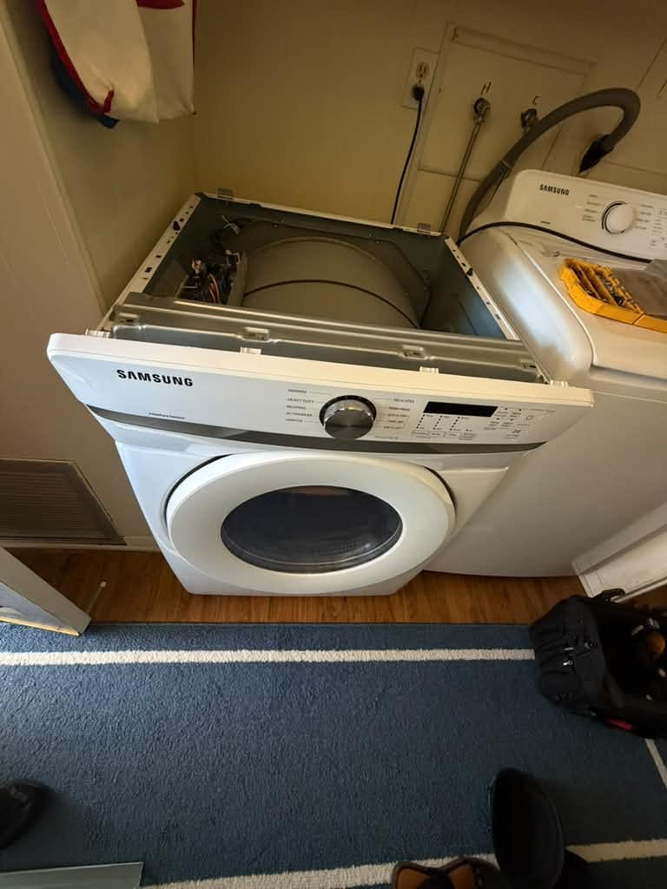

Samsung Refrigerator, Washer, Dryer & Range Repair in Orange County
Ice makers that freeze up, refrigerators that stop cooling, washers throwing 4C and 5C codes, and dryers that won't heat. We know Samsung's French-door fridges and its laundry inside out. Same-day service available.
5.0 · 156 Google reviewsMon–Sat, 8am–7pm.

What to expect
- Flat $99 diagnostic feeApplied toward the repair if you approve the work.
- Written quote firstItemized, before any work starts.
- 90-day parts, 30-day laborWarranty on every repair.
- Same-day serviceCall or request online.
Family-owned since 2017 · Licensed, bonded & insured
Recent Samsung Repairs
Real Samsung repairs our technicians completed recently, with the city of each job.





Chasing a fridge problem instead? See our Orange County refrigerator repair service, or read our guide on Samsung refrigerator not cooling in Irvine.
See all recent repairsWhat Our Customers Say
From our 156 verified 5-star Google reviews
AG arrived on time and fixed the oven. Great work!
Fast And professional good service on my dryer
AG fixed my Samsung dryer with no problem at all! Very efficient and friendly!
AG cleaned condenser on my Samsung refrigerator. Good price!!!
From Call to Fixed: How a Samsung Repair Works
Here is exactly what happens from your first call to a fully working Samsung appliance.
Request a RepairCall or Request Online
Reach us at (949) 629-5365 or submit the contact form. Share the model number and the symptom or error code, and we schedule you the same day when possible.On-Site Diagnosis
A technician arrives in a 2-hour window and tests the ice maker, defrost system, pump, element, or board to find the exact fault, rather than guessing at parts.Upfront Quote
You get a clear, itemized quote before we start. The $99 diagnostic fee is credited toward the repair if you proceed. No surprise charges at the end.Repair & Warranty
Common Samsung ice-maker assemblies, pumps, and elements ride in the van, so most repairs finish the same day. Every repair carries a 90-day parts and 30-day labor warranty: if the same problem returns within 30 days, we come back at no charge.
Pricing & Discounts
- $99 diagnostic fee: applied toward your repair when you approve the work. If you decide not to proceed, the $99 covers the visit.
- Multi-unit visits: first unit $99, each additional unit on the same visit $49.
- 20% off labor for repeat customers and seniors 60+ (cannot combine with other offers).
Estimates vary by brand, part availability, and diagnosis. Final quote is provided before repair. See full pricing guide
Diagnostic visit$99
- Applied toward the repair when you approve the work
- Itemized written quote before any work starts
- You decide whether to proceed
Refrigerators, Washers, Dryers, and Ranges: Every Samsung We Repair
Samsung fills a huge share of Orange County kitchens and laundry rooms, from Family Hub refrigerators to Bespoke ranges. We service the full lineup, and we know the ice-maker faults and error codes specific to each.
- Refrigerators (French Door, Family Hub, Bespoke)
- The in-door ice maker is Samsung's signature part and its most common failure, frosting over and freezing up. We handle cooling loss, defrost faults, evaporator-fan problems, and the ice-maker repair itself.
- Front-Load & FlexWash Washers
- Samsung front-loaders are known for 4C water-supply and 5C drain codes, plus worn door boots and suspension. We carry the pumps, valves, and dampers these units need.
- Top-Load Washers
- High-efficiency top-loaders that throw UB unbalance errors and shake when the suspension wears. On older recalled models we also confirm the tub and lid are sound before spinning.
- Electric & Gas Dryers
- Vented electric and gas dryers. An HE heating error or a dryer that runs cold usually needs a heating element, thermistor, or igniter, and a clogged vent is the hidden culprit behind most no-heat calls.
- Dishwashers
- Samsung dishwashers that throw LC leak or 5C drain codes, leave standing water, or stop cleaning. A clogged filter, jammed drain pump, or failed leak sensor is the usual cause.
- Gas, Electric & Induction Ranges
- Freestanding and slide-in Samsung ranges plus Bespoke models. A bake element that won't heat, a weak igniter, an induction board fault, or a drifting sensor are the faults we meter and repair.
Ice-Maker Freeze-Ups, Error Codes, and Samsung's Known Weak Points
Samsung appliances fail in specific, recognizable ways. These are the repairs our technicians handle most often on Orange County homes.
- Refrigerator Ice Maker Freezing Up
- The in-door ice maker frosts over and freezes into a block, so it stops making ice. It is the single most common Samsung fridge call. A one-time defrost is temporary; the lasting fix is the updated assembly and sealing the frost path, which we do together.
- Refrigerator Not Cooling (22E / Defrost)
- Frost on the back panel behind the crisper and a warming fridge usually mean a failed defrost heater or sensor icing the coil, or a bad evaporator fan. Codes like 22E or 39E point to the fan or ice-maker circuit. We diagnose the defrost system precisely.
- Washer 4C Water-Supply Error
- The washer will not fill correctly. Usually a clogged inlet screen, a kinked or closed supply hose, or a failed water valve. We check the supply and valve and clear or replace the fault so the cycle fills properly again.
- Washer 5C Drain Error
- The water will not pump out. Almost always a clogged drain-pump filter full of lint and coins, and clearing it fixes many cases. If it is clean, the drain pump has failed or the hose is kinked. We find the exact blockage.
- Washer UB / Shaking and Walking
- A UB on every load, with violent shaking or a washer that walks, usually means worn suspension rods, shock absorbers, or a failing tub support. We inspect and replace the worn parts so the drum spins steady.
- Dryer HE / Won't Heat
- Tumbles but blows cold, often with an HE code. On electric models it is the heating element or thermistor; on gas it is the igniter or valve coil. A blocked vent overheats and trips the cutoff, so we check airflow on every no-heat repair.
- Dishwasher LC Leak or 5C Drain
- An LC code flags the leak sensor tripping, often from a worn door gasket or a hose; a 5C means it will not drain. We find the leak source or clear the drain and confirm the pump before returning the unit to service.
- Range Element or Igniter Fault
- A gas burner that clicks but won't light, an induction zone that won't heat, or an oven that won't reach temperature usually means a weak igniter, a failed element, or a control board fault. We meter the parts to pin down which before quoting.
Why Samsung Refrigerator Ice Makers Freeze Up
If you own a Samsung French-door refrigerator, there is a good chance you already know this problem by heart: the ice maker frosts over, freezes into a solid block, and stops making ice, sometimes only weeks after you last chipped it clear. You are not doing anything wrong, and you are far from alone. It is the single most common Samsung refrigerator complaint we hear in Orange County, and it is a widely reported design issue on many models from roughly 2015 onward.
The root of it is where Samsung put the ice maker. On these French-door models it sits inside the fresh-food compartment rather than the freezer, so every time the doors open, warm, humid air reaches the cold ice-maker housing and condenses, then freezes. Over weeks that frost builds until it jams the auger and encases the whole assembly. A one-time defrost with a hair dryer buys you a few weeks, but the frost always comes back, because the air path that let it in is still there.
A lasting repair means treating the whole picture, not just melting the ice. We replace the ice-maker assembly with the updated part, seal and correct the air path that lets humid air reach it, and check the defrost heater and sensor that should be keeping frost in check. On a Samsung fridge that is otherwise cooling well, this repair is absolutely worth doing. If the same unit has already lost its sealed system or compressor too, we will tell you honestly when replacement is the smarter money.
Samsung Repair Costs: What to Expect in Orange County
A new Samsung refrigerator or washer starts well above most repair costs, so for the common faults repair is the clear financial choice. These are typical Orange County ranges, not quotes.
| Repair Type | Typical Range |
|---|---|
| Service call / diagnostic: Orange County market average (often credited toward repair) | $75 – $100 |
| Refrigerator ice-maker assembly / defrost repair | $200 – $420 |
| Refrigerator control board / evaporator fan | $220 – $430 |
| Refrigerator sealed system / compressor | $350 – $700 |
| Washer drain pump (5C) / water valve (4C) | $180 – $360 |
| Washer suspension / shock absorbers (UB) | $200 – $430 |
| Dryer heating element / thermistor (HE) | $180 – $340 |
| Range / oven element, igniter, or control board | $200 – $430 |
Estimates vary by brand, part availability, and diagnosis. Final quote is provided before repair.
Our company diagnostic fee is a flat $99 in Orange County, credited toward the repair if you proceed. See our full appliance repair cost guide for broader Orange County pricing context.
Ready to schedule your Samsung repair?
Samsung repair across Orange County
Universal Appliances Repair Group Inc. provides Samsung appliance repair across Orange County, California, including French-door, Family Hub, Bespoke and side-by-side refrigerators, front-load and top-load washers, electric and gas dryers, dishwashers, and gas, electric and induction ranges. Common repairs include the French-door ice-maker freeze-up, refrigerators not cooling, 4C and 5C washer water and drain codes, and the dryer HE heating fault.
We serve Irvine, Anaheim, Santa Ana, Huntington Beach, Costa Mesa, and surrounding cities, with same-day service available. Call (949) 629-5365 or book online to schedule a Samsung repair visit.
What Orange County Samsung Owners Ask Us
The most common questions from Samsung owners across Irvine, Anaheim, Huntington Beach, Santa Ana, and surrounding Orange County cities.
Still have a question? Call (949) 629-5365.
Yes. Samsung refrigerators are among the most common we service in Orange County, and the ice maker is the number one reason people call. We handle Samsung French-door, Family Hub, Bespoke, and side-by-side units, and we carry the common ice-maker assemblies, defrost heaters, evaporator fans, and inlet valves on the van. Samsung French-door ice makers are widely known for frosting over and freezing up, so we diagnose that specific fault as well as general cooling problems. Call (949) 629-5365 for same-day availability in Irvine, Anaheim, Huntington Beach, Santa Ana, and surrounding cities.
This is the most common Samsung refrigerator complaint we see. On many Samsung French-door models the ice maker sits inside the fresh-food compartment, and warm, humid air reaches it and frosts over the assembly, so it stops making ice or freezes into a solid block. The usual fixes are replacing the ice-maker assembly with the updated part, clearing and sealing the air path, and checking the defrost heater and sensor. A one-time defrost buys a few weeks, but a lasting fix means addressing the assembly and the frost path together. We diagnose exactly which is needed before quoting.
A Samsung refrigerator that stops cooling often points to the defrost system, the evaporator fan, or a control fault, and codes like 22E, 22C, or 39E usually flag the ice-maker or fan circuit. Frost building on the back panel behind the crisper is a classic sign the defrost heater or sensor has failed and the evaporator coil has iced over, choking airflow. Less often the sealed system or compressor is at fault. We diagnose the defrost system, fan, and sealed system precisely rather than guessing at the most expensive part first, and tell you plainly whether repair makes sense.
These are the two most common Samsung washer codes. 4C (older models show 4E) is a water-supply error: the machine is not filling correctly, usually a clogged inlet screen, a kinked hose, a closed tap, or a failed water valve. 5C (or 5E) is a drain error: the water will not pump out, almost always a clogged drain-pump filter full of lint and coins, or a failed drain pump. Clearing the filter fixes many 5C cases with no parts. We find the exact blockage or failed valve and repair it, usually the same day.
UB or UE means the load is unbalanced and the washer cannot safely reach spin speed. An occasional UB on a bulky item is normal, but a UB on every load, with violent shaking or a washer that walks across the floor, usually means worn suspension rods or shock absorbers, or on some top-load models a failed support. We inspect the suspension, shocks, and tub support and replace the worn parts so the drum runs steady again. On older recalled Samsung top-loaders we also confirm the tub and lid are sound.
HE (or HC) is Samsung's heating error, and a dryer that tumbles but blows cold usually has a failed heating element or thermistor on electric models, or an igniter or gas valve coil on gas models. A blocked vent is the hidden cause behind most no-heat calls, because trapped heat trips the thermal cutoff, so we check airflow as part of every repair. We test the element, thermistor, thermal fuse, and igniter to find the real failure rather than swapping parts, and we carry the common Samsung heating parts on the van.
Usually, yes, especially for laundry and ranges, where Samsung parts are widely available and the common faults (a drain pump, a heating element, a suspension rod, or a water valve) cost a fraction of a new machine. The one that needs an honest look is a Samsung refrigerator with a repeat ice-maker or sealed-system failure: the ice-maker repair is worth doing, but if the same fridge has already failed multiple systems we will tell you plainly when replacement is the smarter money. We give you a written quote before any work so you decide with real numbers.
Our company diagnostic fee is $99 in Orange County, credited toward the repair if you proceed. Typical Samsung repairs run $200 to $420 for a refrigerator ice-maker assembly or defrost repair, $180 to $360 for a washer drain pump or water valve, $180 to $340 for a dryer heating element or thermistor, and $200 to $430 for a range element or control board. A sealed-system or compressor repair runs more. Because a new Samsung refrigerator or washer starts well above these figures, most repairs are worth it. Estimates vary by model and part availability; we quote before starting.
We serve all of Orange County including Irvine, Anaheim, Santa Ana, Huntington Beach, Costa Mesa, Mission Viejo, Fullerton, Garden Grove, Lake Forest, Newport Beach, Buena Park, Orange, and surrounding cities. Samsung is one of the most common brands in Orange County kitchens and laundry rooms, so we service it across every neighborhood daily. Call (949) 629-5365 to confirm same-day availability in your area.
One Samsung Kitchen & Laundry, Every Appliance Covered
A Samsung refrigerator usually shares the house with a Samsung washer, dryer, and range. One call handles your whole lineup, from the ice maker to the drain pump.
- Refrigerator RepairFrench-door and side-by-side units: ice-maker freeze-ups, cooling loss, defrost faults, and evaporator fans.
- Washer RepairFront-load and top-load: 4C and 5C codes, no-drain, UB vibration, worn suspension, and door boots.
- Dryer RepairElectric and gas dryers that won't heat (HE), take too long, or won't start: elements, thermistors, and igniters.
- Dishwasher RepairNot draining, LC leak codes, standing water, and control-panel faults on Samsung dishwashers.
- Oven & Stove RepairGas, electric, and induction ranges: dead bake elements, weak igniters, and temperature-sensor drift.
- Garbage Disposal RepairHumming, jammed, or leaking disposals under the sink, repaired or replaced the same day.
- Repair Cost GuideTypical Orange County price ranges by appliance and repair, so you know what to expect before you call.
- All ServicesEvery appliance we repair across Orange County, from refrigerators to wine coolers.
Need Samsung Repair in Orange County?
Same-day service available. Call now or book online; a technician will confirm your appointment within the hour.
Backed by 156 verified 5-star Google reviews.
Call (949) 629-5365
Request a Repair
Mon–Sat, 8am–7pm